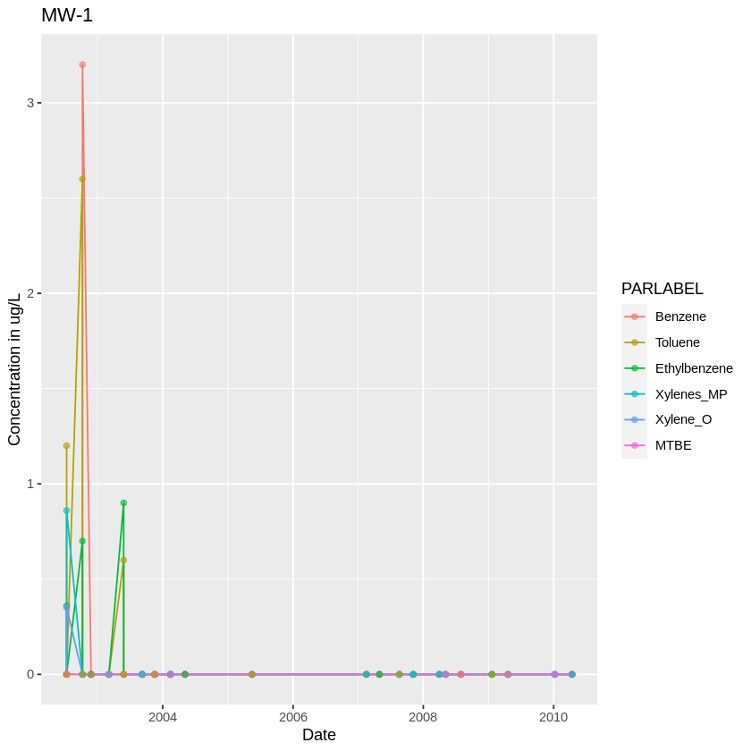
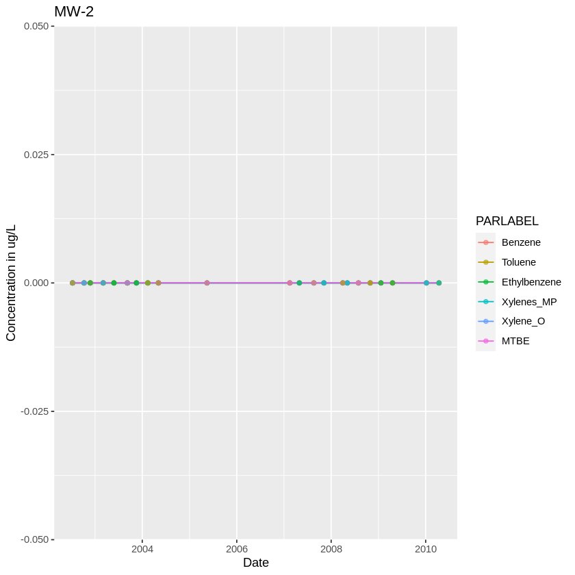
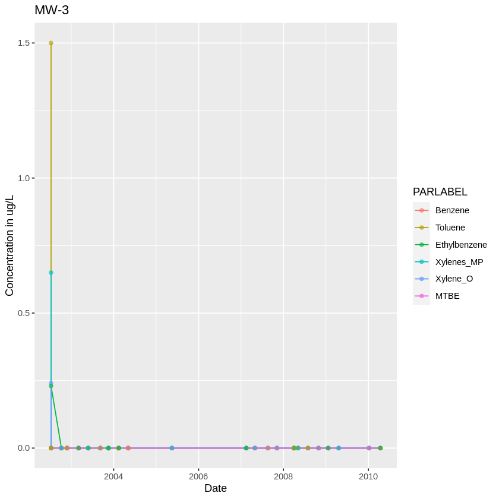
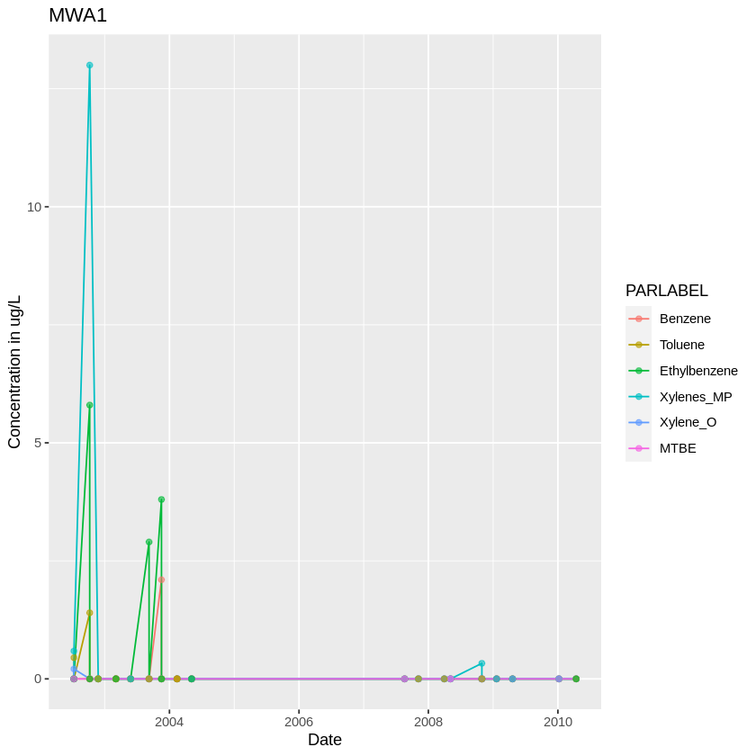
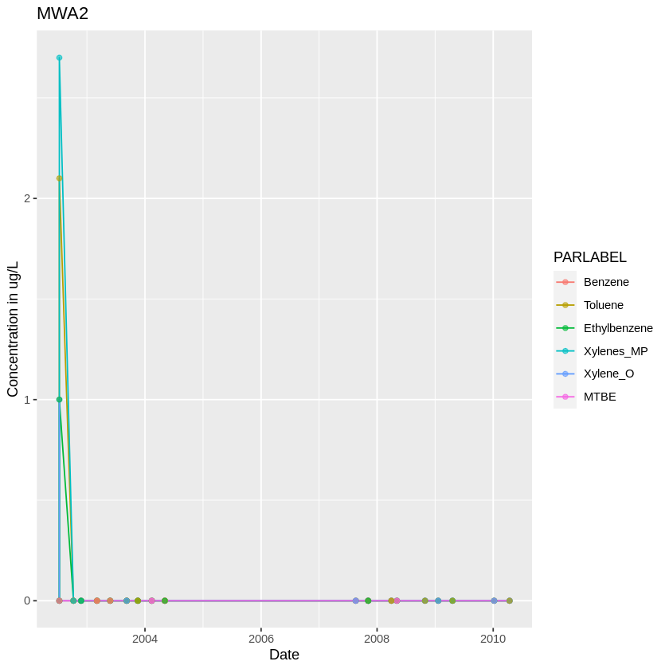
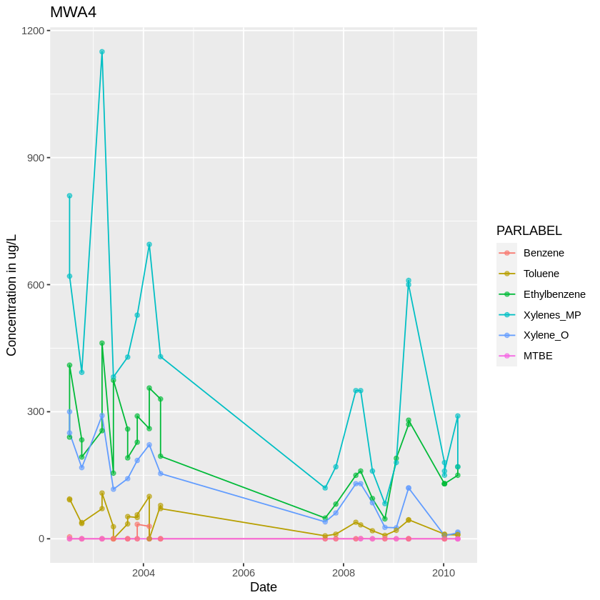
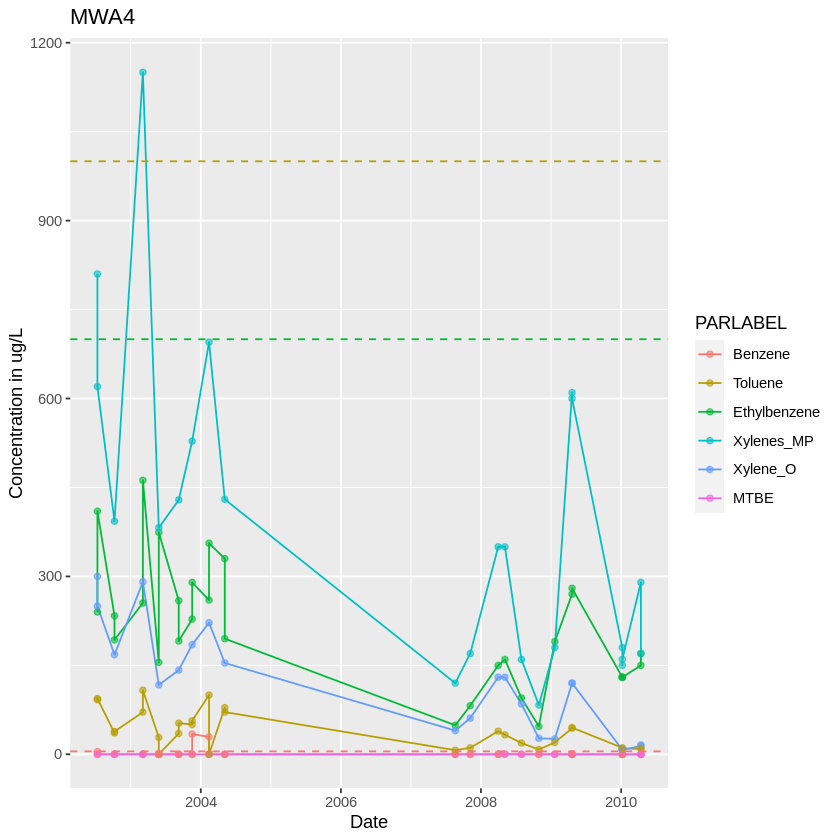
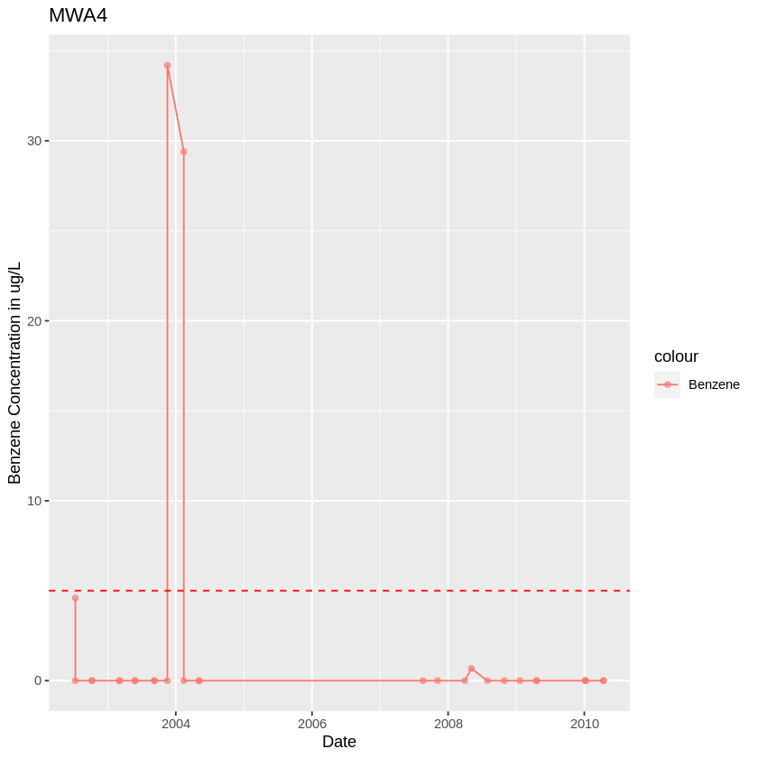

Mining Data from California's Geotracker Database
Geotracker is a public database that is used to store environmental data from regulated sites in California. I’m going to download some data of a contaminated site and clean it up to try to derive some insights about the site. I picked Alpine county because it is the least populated one and I want to work with a smaller file. Some of the more industrial counties can have thousands of sites.
URL <- "https://geotracker.waterboards.ca.gov/data_download/edf_by_county/AlpineEDF.zip"
download.file(URL, destfile='alpine.zip', method='curl')
After downloading the zipped file I need to unzip it and read in the .txt file. Let’s see what’s inside.
unzip('alpine.zip')
alpine <- read.delim("AlpineEDF.txt")
head(alpine)
| COUNTY | GLOBAL_ID | FIELD_PT_NAME | LOGDATE | LOGTIME | LOGCODE | SAMPID | MATRIX | LABWO | LABCODE | ⋯ | ANADATE | BASIS | PARLABEL | PARVAL | PARVQ | LABDL | REPDL | UNITS | DILFAC | LNOTE | |
|---|---|---|---|---|---|---|---|---|---|---|---|---|---|---|---|---|---|---|---|---|---|
| <chr> | <chr> | <chr> | <chr> | <int> | <chr> | <chr> | <chr> | <chr> | <chr> | ⋯ | <chr> | <chr> | <chr> | <dbl> | <chr> | <dbl> | <dbl> | <chr> | <dbl> | <chr> | |
| 1 | Alpine | T0600300005 | K1 | 2012-10-08 | 1110 | CLSR | K1-15 | SO | CVJ0496 | CLSR | ⋯ | 2012-10-12 | W | PHCD | 0 | ND | 0.033 | 1.0 | MG/KG | 1 | |
| 2 | Alpine | T0600300005 | KMPUD#2 | 2008-12-30 | 1330 | CLSR | KMPUD #2 | W | CSA0056 | CLSR | ⋯ | 2009-01-07 | N | MOIL | 79 | = | 9.100 | 50.0 | UG/L | 1 | DU,DU |
| 3 | Alpine | T0600300005 | KMPUD#2 | 2002-04-16 | 1203 | KFR | KMPUD #2 | WX | NA | ALPS | ⋯ | 2002-04-18 | N | MTBE | 0 | ND | 0.250 | 0.5 | UG/L | 1 | |
| 4 | Alpine | T0600300005 | KMPUD#2 | 2002-04-16 | 1203 | KFR | KMPUD #2 | WX | NA | ALPS | ⋯ | 2002-04-18 | N | BZME | 0 | ND | 0.250 | 0.5 | UG/L | 1 | |
| 5 | Alpine | T0600300005 | KMPUD#2 | 2002-10-31 | 1805 | KFR | KMPUD WELL #2 | WX | NA | ALPS | ⋯ | 2002-11-04 | N | DCE11 | 0 | ND | 0.500 | 1.0 | UG/L | 1 | |
| 6 | Alpine | T0600300005 | KMPUD#2 | 2002-10-31 | 1805 | KFR | KMPUD WELL #2 | WX | NA | ALPS | ⋯ | 2002-11-04 | N | BZME | 0 | ND | 0.250 | 0.5 | UG/L | 1 |
There’s documentation about all of the fields, but we can already make sense of some of them. GLOBAL_ID represents a site, and FIELD_PT_NAME is a well. PARLABEL is the code for the name of the contaminant and PARVAL is the concentration reported. There’s also helpful QA/QC information, and the latitude and longitude of the wells are in a different file on the geotracker website. We’ll focus on one site with the most observations reported.
library(dplyr)
alpine %>%
group_by(GLOBAL_ID) %>%
count() %>%
arrange(desc(n))
Attaching package: ‘dplyr’
The following objects are masked from ‘package:stats’:
filter, lag
The following objects are masked from ‘package:base’:
intersect, setdiff, setequal, union
| GLOBAL_ID | n |
|---|---|
| <chr> | <int> |
| T0600300011 | 11764 |
| T0600300005 | 5776 |
| T0600397314 | 5131 |
| T0600300013 | 3780 |
| T0600300007 | 2145 |
| T0600300008 | 1532 |
| 1 |
Looks like T0600300011 is our site. Let’s try to see what the main chemicals of concern and their concentrations are.
site <- alpine %>%
filter(GLOBAL_ID == "T0600300011")
site %>%
group_by(PARLABEL) %>%
tally(sort = TRUE) %>%
head()
| PARLABEL | n |
|---|---|
| <chr> | <int> |
| BZ | 260 |
| BZME | 260 |
| EBZ | 260 |
| XYLENES1314 | 203 |
| XYLO | 203 |
| MTBE | 194 |
The most results came from benzene (BZ), toluene (BZME), ethylbenzene (EBZ), xylene - isomers m & p (XYLENES1314), o-xylene (XYLO), and methyl-tert-butyl ether (MTBE). This is a hydrocarbon site. Now let’s try to see which wells are near the source area.
top_wells <- site %>%
filter(PARLABEL %in% c("BZ", "BZME", "EBZ", "XYLENES1314", "XYLO", "MTBE")) %>%
select(c("FIELD_PT_NAME", "LOGDATE", "MATRIX", "PARLABEL", "PARVAL", "PARVQ", "LABDL", "REPDL", "UNITS",)) %>%
group_by(FIELD_PT_NAME) %>%
tally(sort = TRUE) %>%
filter(n>100)
# the wells with the most data are:
top_wells
| FIELD_PT_NAME | n |
|---|---|
| <chr> | <int> |
| MW-3 | 167 |
| MW-2 | 161 |
| MWA4 | 157 |
| MW-1 | 155 |
| MWA1 | 143 |
| MWA2 | 143 |
The most sampled wells are MW-3, MW-2, MWA4, MW-1, MWA1, and MWA2. Naming conventions for wells can mean nothing or can mean a lot, and get wackier the longer a site has been around.
site <- site %>%
filter(FIELD_PT_NAME %in% top_wells$FIELD_PT_NAME) %>%
filter(PARLABEL %in% c("BZ", "BZME", "EBZ", "XYLENES1314", "XYLO", "MTBE")) %>%
select(c("FIELD_PT_NAME", "LOGDATE", "MATRIX", "PARLABEL", "PARVAL", "PARVQ", "LABDL", "REPDL", "UNITS",))
head(site)
| FIELD_PT_NAME | LOGDATE | MATRIX | PARLABEL | PARVAL | PARVQ | LABDL | REPDL | UNITS | |
|---|---|---|---|---|---|---|---|---|---|
| <chr> | <chr> | <chr> | <chr> | <dbl> | <chr> | <dbl> | <dbl> | <chr> | |
| 1 | MW-1 | 2002-10-08 | W | BZ | 0 | ND | 5.0 | 5.0 | UG/L |
| 2 | MW-1 | 2003-09-08 | W | BZ | 0 | ND | 5.0 | 5.0 | UG/L |
| 3 | MW-1 | 2002-11-25 | W | XYLO | 0 | ND | 5.0 | 5.0 | UG/L |
| 4 | MW-1 | 2003-03-05 | W | MTBE | 0 | ND | 5.0 | 5.0 | UG/L |
| 5 | MW-1 | 2003-03-05 | W | EBZ | 0 | ND | 5.0 | 5.0 | UG/L |
| 6 | MW-1 | 2003-03-05 | W | EBZ | 0 | ND | 0.5 | 0.5 | UG/L |
Let's take a closer look at the units. The first six observations are reported in μg/L, but are they all?
First we’ll want to clean up the classes - the FIELD_PT_NAME should be a factor and LOGDATE should be a date.
site$FIELD_PT_NAME <- as.factor(site$FIELD_PT_NAME)
site$LOGDATE <- as.Date(site$LOGDATE)
site$MATRIX <- as.factor(site$MATRIX)
site$PARLABEL <- as.factor(site$PARLABEL)
site$PARVQ <- as.factor(site$PARVQ)
site$UNITS <- as.factor(site$UNITS)
levels(site$PARLABEL) <- list(Benzene="BZ", Toluene="BZME", Ethylbenzene="EBZ", Xylenes_MP="XYLENES1314", Xylene_O="XYLO", MTBE="MTBE")
summary(site)
FIELD_PT_NAME LOGDATE MATRIX PARLABEL
MW-1:155 Min. :2002-07-11 W:926 Benzene :179
MW-2:161 1st Qu.:2003-05-27 Toluene :179
MW-3:167 Median :2004-05-05 Ethylbenzene:179
MWA1:143 Mean :2005-11-06 Xylenes_MP :132
MWA2:143 3rd Qu.:2008-05-05 Xylene_O :132
MWA4:157 Max. :2010-04-14 MTBE :125
PARVAL PARVQ LABDL REPDL UNITS
Min. : 0.00 = :135 Min. :0.080 Min. : 0.500 UG/L:926
1st Qu.: 0.00 ND:791 1st Qu.:0.380 1st Qu.: 0.500
Median : 0.00 Median :0.500 Median : 0.500
Mean : 20.95 Mean :1.909 Mean : 3.568
3rd Qu.: 0.00 3rd Qu.:5.000 3rd Qu.: 5.000
Max. :1150.00 Max. :9.900 Max. :50.000
Turns out that they are all reported in μg/L, which is good, because that means the concentrations are probably fairly low - remember one μg/L is one part per billion. This isn't always the case - be sure to keep an eye out for units and do conversions as necessary before working with the data. The PARVQ tells us if the chemical was detected in the sample or below the detection limit (ND). For 791 of the observations, the chemical was not detected in the sample, while in only 135 observations a true detected concentration is reported. In cases where the chemical is not detected, is NA, zero, the lab detection limit, report detection limit, or something else reported?
site %>%
filter(PARVQ == 'ND') %>%
head()
| FIELD_PT_NAME | LOGDATE | MATRIX | PARLABEL | PARVAL | PARVQ | LABDL | REPDL | UNITS | |
|---|---|---|---|---|---|---|---|---|---|
| <fct> | <date> | <fct> | <fct> | <dbl> | <fct> | <dbl> | <dbl> | <fct> | |
| 1 | MW-1 | 2002-10-08 | W | Benzene | 0 | ND | 5.0 | 5.0 | UG/L |
| 2 | MW-1 | 2003-09-08 | W | Benzene | 0 | ND | 5.0 | 5.0 | UG/L |
| 3 | MW-1 | 2002-11-25 | W | Xylene_O | 0 | ND | 5.0 | 5.0 | UG/L |
| 4 | MW-1 | 2003-03-05 | W | MTBE | 0 | ND | 5.0 | 5.0 | UG/L |
| 5 | MW-1 | 2003-03-05 | W | Ethylbenzene | 0 | ND | 5.0 | 5.0 | UG/L |
| 6 | MW-1 | 2003-03-05 | W | Ethylbenzene | 0 | ND | 0.5 | 0.5 | UG/L |
It looks like the value reported for non-detected samples is zero. This can cause problems when analyzing the data statistically. Let’s visualize what these concentrations look like at MW-1.
MW1 <- site %>%
filter(FIELD_PT_NAME == "MW-1")
MW2 <- site %>%
filter(FIELD_PT_NAME == "MW-2")
MW3 <- site %>%
filter(FIELD_PT_NAME == "MW-3")
MWA1 <- site %>%
filter(FIELD_PT_NAME == "MWA1")
MWA2 <- site %>%
filter(FIELD_PT_NAME == "MWA2")
MWA4 <- site %>%
filter(FIELD_PT_NAME == "MWA4")
library(ggplot2)
ggplot(MW1, aes(x = LOGDATE, y = PARVAL, color = PARLABEL)) +
geom_line() +
geom_point(alpha = 0.6) +
labs(title ="MW-1", x ="Date", y = "Concentration in ug/L")
ggplot(MW2, aes(x = LOGDATE, y = PARVAL, color = PARLABEL)) +
geom_line() +
geom_point(alpha = 0.6) +
labs(title ="MW-2", x ="Date", y = "Concentration in ug/L")
ggplot(MW3, aes(x = LOGDATE, y = PARVAL, color = PARLABEL)) +
geom_line() +
geom_point(alpha = 0.6) +
labs(title ="MW-3", x ="Date", y = "Concentration in ug/L")
ggplot(MWA1, aes(x = LOGDATE, y = PARVAL, color = PARLABEL)) +
geom_line() +
geom_point(alpha = 0.6) +
labs(title ="MWA1", x ="Date", y = "Concentration in ug/L")
ggplot(MWA2, aes(x = LOGDATE, y = PARVAL, color = PARLABEL)) +
geom_line() +
geom_point(alpha = 0.6) +
labs(title ="MWA2", x ="Date", y = "Concentration in ug/L")





At these wells it looks like there were some spikes before 2004, but nothing much going on later. Let’s look at the last well from our selection - MWA4.
ggplot(MWA4, aes(x = LOGDATE, y = PARVAL, color = PARLABEL)) +
geom_line() +
geom_point(alpha = 0.6) +
labs(title ="MWA4", x ="Date", y = "Concentration in ug/L")

This one has a lot higher concentrations - take a look at the values on the y axis. Yikes! Let’s see what the EPA Maximum Contaminant Levels (MCLs) are for these chemicals.
ggplot(MWA4, aes(x = LOGDATE, y = PARVAL, color = PARLABEL)) +
geom_line() +
geom_point(alpha = 0.6) +
labs(title ="MWA4", x ="Date", y = "Concentration in ug/L") +
geom_hline(yintercept=5, linetype="dashed", color="#F8766D") +
geom_hline(yintercept=1000, linetype="dashed", color="#B79F00") +
geom_hline(yintercept=700, linetype="dashed", color="#00BA38")

There is no MCL for MTBE (there are probably state guidelines) and the MCL for total xylenes is 10,000, which is off this chart. Benzene has the lowest MCL by far, and it is usually the chemical that drives cleanup. It’s a little hard for us to see it on this plot, so let’s zoom in some more.
MWA4_benzene <- MWA4 %>%
filter(PARLABEL == "Benzene")
ggplot(MWA4_benzene, aes(x = LOGDATE, y = PARVAL, color = "Benzene",)) +
geom_line() +
geom_point(alpha = 0.6) +
labs(title ="MWA4", x ="Date", y = "Benzene Concentration in ug/L") +
geom_hline(yintercept=5, linetype="dashed", color="red")

Around 2004 this well has almost seven times the MCL of benzene, but it quickly went down to non-detectable or very low for the rest of the recorded period. If I was especially interested in this site I would try to request some of the accompanying reports and perform a Mann-Kendall analysis of trends in the wells, but mostly I wanted to show how you can download data from Geotracker and manipulate it in R.
This tutorial is done entirely in a jupyter notebook running an R kernal inside of a docker container. The source files are on github and if you have any questions about using jupyter or docker don’t hesitate to contact me!
Liz McConnell
Graduate Student, CSU Center for Contaminant Hydrology
My research interests include contaminant fate and transport, data analysis using statistics and machine learning, R programming, and geospatial analysis.